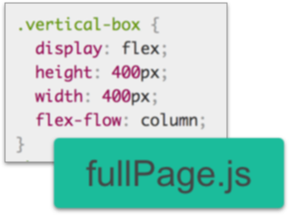
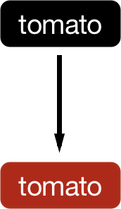
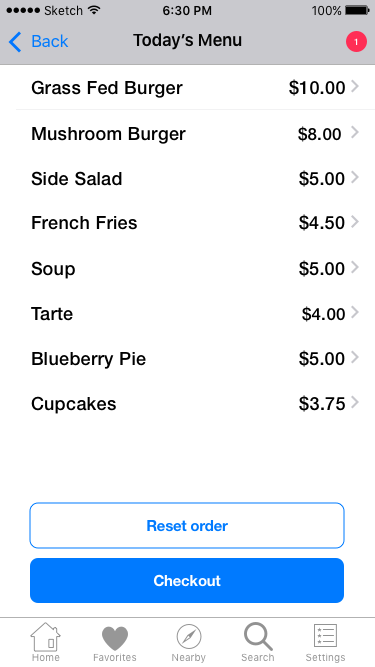

I was asked to develop the opening website for the first Bubble Waffle shop located in Waikiki, Hawaii. Being the first bubble waffle shop in the area creates a unique challenge to be visible to tourists who know the product, and to educate the local market to the product.
Hong Kong-style waffles matched with locally made and inspired ice cream topped with multiple treats are the perfect snack and dessert option for Waikiki. Bubble waffles are the hottest trend in the UK and Australia, and are beginning to appear in US markets.
There are over 7.7 million tourists a year. Every day 100,000 plus tourists are looking for options that are convenient, affordable, and delicious.
After completing this research, I decided to develop a design that highlights realistic photography of the bubble waffle product to help educate the market. For typography, I wanted to develop a wordmark that would be friendly but not juvenile or kitschy. The color palette would need to appeal to the Asian market. Programming elements include smooth scrolling and Google Map API integration.
Baloo, a font-family with Asian roots, was chosen for the wordmark for its playful and friendly appearance. Its rounded terminals are reminiscent of Hello Kitty, the popular Asian character.
Hind was choosen for the body of the site. It's a sans-serif font that was developed for user interface design. Most strokes have straight endings, which provides needed balance to Baloo's rounded features. The two fonts share similar x-heights as well.
Flexbox CSS was utilized in order to take advantage of modern browser support for improved responsive layouts. It is designed to accommodate additional content while maintaining appropriate spacing across various screen widths and heights.
Fullpage.js was utilized to create smooth scrolling that works both on mobile touch screens and desktops.
It is critical that the site's imagery resonate with the Asian Market. Rose Pink is uniformly associated with feminine characteristics in Asian countries. Although shades of black are uniformely viewed as masculine, it was rejected for Cerulean Blue, which also is viewed as masculine in Asia, 1 and is universally recognized as symbolizing trust. Pairing the two colors presents a brand that is fun, trustworthy, and for both men and women.
The initial button color for food options, black, was judged too harsh next to the food. A more harmonius color with adequate contrast was selected.
An early attempt to portray more information about a chef’s menu before entering the order workflow was rejected as creating unnecessary clicks. The flow was revised to speed up ordering.
A/B testing was used to identify improvements to the logo; as a result, an attempt to portray a hot bowl of food with steam was rejected for a cleaner approach.
This project highlighted the importance of having an inventory of digital assets before beginning the design work. Since the Bubble Waffle isn’t well known, there is inadequate free quality photography available from traditional sources. Adobe Stock images were utilized, however, the original intended layouts had to be modified since there are almost no appropriate images in portrait mode.
My scrolling script also interfered with my mobile navigation script, which necessitated smaller design changes to finish the project on time.
My stakeholder for this project, which is a real business that is being launched, is six time-zones behind me. This occasionally caused communication delays, and highlights the importance of developing a schedule of deliverables for clients.